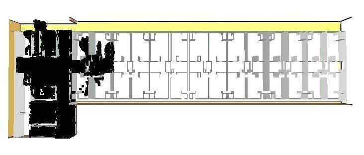

为肺炎疫情开发的简易室内外气流模拟工具
研究背景
现在肺炎疫情已经成为国内外关注焦点。为了应对疫情，诸多医院正在迅速新建或者改建。由于新型冠状病毒会附着在飞沫中，随空气扩散。因此准确掌握空气流动情况有助于减少感染。特别是清华大学江亿院士等研究表明[1]，当新鲜空气供应量充足时，感染风险会极大降低。
2
简易室外气流模拟程序
该软件基于开源流体力学软件FDS研发，使用者只要输入建筑物（建筑群）的平面布置，就可以算出建筑物周围的风场分布，以及可能排风口的气流扩散分布。效果如下图所示：

图 1 室外气流模拟 （Case 1，5m/s 北风）

图 2 室外气流扩散模拟（Case 1，5m/s 北风）

图 3 室外气流模拟 （Case 2，5m/s 西北风）

图 4 室外气流扩散模拟（Case 2，5m/s 西北风）
该软件的操作步骤很简单：
(1) 下载并安装FDS软件（该软件为开源软件，没有版权问题）。
(2) 运行“FDSmainwindow.exe”，输入风向，风速，建筑物的平面位置，排风口坐标。
(3) 开始计算。
(4) 计算结束后，用FDS自带的免费Smokeview程序即可查看风速和污染扩散结果。
程序下载地址和详细流程说明参见链接：
https://pan.baidu.com/s/1y-z9Xz9urMeLt3FtR5hCtQ
3
简易室内气流模拟程序
室内气流模拟由于要考虑室内空间布置，所以建模要复杂一点。考虑到广大建筑师都很熟悉SketchUp软件，因此我们用PyroSim软件作为前处理软件，将SketchUp模型转换到FDS模型，来完成气流的模拟（图5、6），识别空气流动性充分和不足的室内区域，以调整通风、消毒和隔离策略。详见本程序的说明文件。当然，如果有BIM模型的话，PyroSim软件也可以将其转换成FDS模型。

图5 室内气流模拟结果

图6 室内气流扩散模拟结果
虽然PyroSim软件不是免费软件，但是可以申请30天的试用期，30天对于肺炎疫情应急来说也足够了。
详细操作流程、示例模型等参见链接：
https://pan.baidu.com/s/1y-z9Xz9urMeLt3FtR5hCtQ
4
后记
需要说明的是，因为我们水平有限，时间又很紧，所以这个程序确实很简陋，且FDS做普通气流模拟也未必是最好的选择。但是，考虑到现阶段应急的急迫需求，我们尽量争取做到人人都能用（程序没有版权问题），且人人都能学会。我们也尝试用其他的流体力学软件做了一些工作，但是由于学习难度大、计算平台要求高、软件版权限制，可能不能满足现阶段的需要。我们也欢迎大家群策群力，发展完善相关分析程序，为战胜疫情尽自己的一份力。
非常感谢北京科技大学许镇课题组：张芙蓉、齐明珠、杨雅钧、薛巧蕊同学和清华大学陆新征课题组：顾栋炼、徐永嘉、郑哲同学，他们这些天每天都在非常辛勤的工作。
参考文献
[1] Jiang Y, Zhao B, Li XF, Yang XD, Zhang ZQ, Zhang YF, Investigating a safe ventilation rate for the prevention of indoor SARS transmission: an attempt based on a simulation approach, Building Simulation, 2009, 2: 281–289.

顾栋炼

徐永嘉

郑哲
---End---
相关研究
新论文：抗震&防连续倒塌：一种新型构造措施
长按识别二维码，关注我们的科研动态